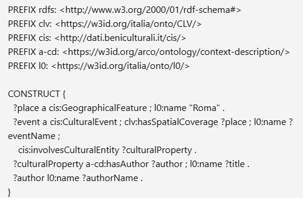

Ponte di Tiberio (ID Wikidata: Q2063557)
Investigated by Serena Pascarella
🌉 Why the Tiberius Bridge?
The Tiberius Bridge in Rimini is a Roman bridge constructed between 14 and 21 AD under the reigns of Roman emperors Augustus and Tiberius. The bridge traverses the Marecchia port canal at the southern end of two Roman roads, the Via Aemilia and the Via Popilia. The bridge was built to showcase the impressiveness of Roman monumental infrastructure,emphasised by its religious-theological decorative artwork. It is the oldest surviving Roman bridge to be decorated with Greek orders.
I undertook the following actions to enhance its Wikidata documentation, recognizing the importance of keeping it current due to its prominent status as a symbolic monument of Rimini and its significant role in shaping the city's identity and tourism appeal.
🔍 SPARQL queries to detect the gaps
SELECT Query
As a preliminary point, I noticed that some properties to be added on the Ponte di Tiberio could be the founder, culture and architectural style.Therefore I used this query with the DISTINCT function to ensure that the query results will not contain duplicate rows. Since multiple properties (like ?foundedby, ?culture, or ?architecturalstyle) may have multiple values or combinations, using DISTINCT helps avoid repeated identical rows in the output. Then, the FILTER query, to restrict the labels of the monument (rdfs:label) to only those written in Italian ("it"). This ensures that the result will return the monument's name only in the desired language. Finally, I used the OPTIONAL query, in oder to retrieve this additional information about the monument, only if that information is available in Wikidata. If one or more of these properties are missing for the Tiberius Bridge, the query will still return the monument, just with empty values in those fields.
PREFIX wd: <http://www.wikidata.org/entity/>
PREFIX wdt: <http://www.wikidata.org/prop/direct/>
PREFIX rdfs: <http://www.w3.org/2000/01/rdf-schema#>
SELECT DISTINCT ?monuments ?monument_name ?foundedby ?culture ?architecturalstyle
WHERE {
VALUES ?monuments
{ wd:Q2063557 }
?monuments rdfs:label ?monument_name .
FILTER (LANG(?monument_name) = "it")
OPTIONAL{ ?monuments wdt:P112 ?foundedby. }
OPTIONAL{ ?monuments wdt:P2596 ?culture. }
OPTIONAL{ ?monuments wdt:P149 ?architecturalstyle. }
}
By doing so, it appears that the result table lacks information about the founder, culture, and architectural style.
🤖 Use of LLMs to enrich the knowledge graph
I consulted Chat GPT and Deep Seek to help me fill in the missing information, by using the Zero-shot prompt and the Few-shots chain-of-thought prompt with both of them.
Zero-shot prompt
The first question was a zero shot prompt:
"Hi, I'm looking for some information about the Ponte di Tiberio. Could you please tell me who founded it, its cultural context, and its architectural style? Thank you!"
Chat GPT's answer
Deep Seek's answer
Both ChatGPT and Deep Seek are quite correct and they spread the same information as on the reliable sources of the monument.
Sources: (https://www.travelemiliaromagna.it/ponte-di-tiberio-rimini/), (https://www.comune.rimini.it/vivere-il-comune/luoghi/area-archeologica/ponte-di-tiberio)
Few-shots chain-of-thought prompt
Then, I need to insert some missing triples using a CONSTRUCT query, so I requested help from ChatGPT and DeepSeek to build it. By using Few shots chain of thought prompt with both of them.
The question was formulated as it follows, giving as examples two queries made to create new triples for the ArCo knowledge graph:

Chat GPT's answer
Sure! Let's step through this together. You want a Wikidata SPARQL CONSTRUCT query that adds triples to enrich the entity wd:Q2063557 (Ponte di Tiberio) with founder (P112) Augustus (Q1405); culture (P2596) Ancient Rome (Q1747689) and architectural style (P149) Doric order (Q192664).
And you want it in a style similar to your ArCo knowledge graph examples.
Here is the CONSTRUCT query for Wikidata:
PREFIX wd:<http://www.wikidata.org/entity/>
PREFIX wdt:<http://www.wikidata.org/prop/direct/>
PREFIX rdfs:<http://www.w3.org/2000/01/rdf-schema#>
CONSTRUCT {
wd:Q2063557 a wd:Q12280 ; # classify as Bridge
rdfs:label ?label ;
wdt:P112 wd:Q1405 ; # founder: Augustus
wdt:P2596 wd:Q1747689 ; # culture: Ancient Rome
wdt:P149 wd:Q192664 . # architectural style: Doric order
}
WHERE {
wd:Q2063557 rdfs:label ?label .
FILTER (LANG(?label) = "en") # get English label for Ponte di Tiberio
}
The result provided by ChatGPT is correct because the Wikidata Query Service recognizes each ID used. Every entity referenced is valid and exists in the knowledge graph.
Deep Seek's answer
PREFIX wd: <http://www.wikidata.org/entity/>
PREFIX wdt: <http://www.wikidata.org/prop/direct/>
PREFIX wikibase: <http://wikiba.se/ontology#>
PREFIX rdfs: http://www.w3.org/2000/01/rdf-schema#>
PREFIX cis: http://www.w3.org/2000/01/rdf-schema#>
PREFIX a-cd: http://www.w3.org/2000/01/rdf-schema#>
PREFIX l0: https://w3id.org/italia/onto/l0/>
PREFIX clv: http://https://w3id.org/italia/onto/CLV/>
CONSTRUCT {
# Ponte di Tiberio as CulturalProperty with Wikidata properties
wd:Q2063557 a cis:CulturalProperty ;
l0:name "Ponte di Tiberio"@en ;
wdt:P112 wd:Q1405 ; # Founded by (Augustus)
wdt:P2596 wd:Q1747689 ; # Culture (Ancient Rome)
wdt:P149 wd:Q192664 ; # Architectural style (Doric order)
clv:hasSpatialCoverage wd:Q6414 ; # Located in Rimini
a-cd:hasAuthor wd:Q1405 ; # Augustus as author (ArCo style)
a-cd:hasCulturalContext wd:Q1747689 ; # Ancient Roman culture (ArCo)
a-cd:hasTechnicalTypology wd:Q192664 . # Doric order (ArCo)
# Additional descriptive triples
wd:Q1405 l0:name "Augustus"@en ;
a a-cd:Author .
wd:Q1747689 l0:name "Ancient Rome"@en ;
a a-cd:CulturalContext .
wd:Q192664 l0:name "Doric order"@en ;
a a-cd:TechnicalTypology .
wd:Q6414 l0:name "Rimini"@en ;
a cis:GeographicalFeature .
}
WHERE {
# Ensure the items exist
wd:Q2063557 wikibase:label ?bridgeLabel .
wd:Q1405 wikibase:label ?augustusLabel .
wd:Q1747689 wikibase:label ?cultureLabel .
wd:Q192664 wikibase:label ?archLabel .
wd:Q6414 wikibase:label ?riminiLabel .
FILTER(LANG(?bridgeLabel) = "en")
FILTER(LANG(?augustusLabel) = "en")
FILTER(LANG(?cultureLabel) = "en")
FILTER(LANG(?archLabel) = "en")
FILTER(LANG(?riminiLabel) = "en")
}

I requested the same query from Deep Seek; however, the result provided was incorrect because it returned a query using predicates and entities from the ArCo knowledge graph rather than those of Wikidata. Although I specified Wikidata IDs and prefixes in the prompt, since the examples given were based on ArCo data, Deep Seek generated a query incorporating ArCo prefixes. Consequently, the query is not suitable for execution against the Wikidata knowledge graph.
✅ Correct CONSTRUCT query and triples
In conclusion, I choose the query generated by ChatGPT because it is the only accurate one, as each identifier used is recognized by the Wikidata Query Service, indicating that all referenced entities are valid and exist within the knowledge graph. Let's look at the final result:
Get back at the beginning of the page